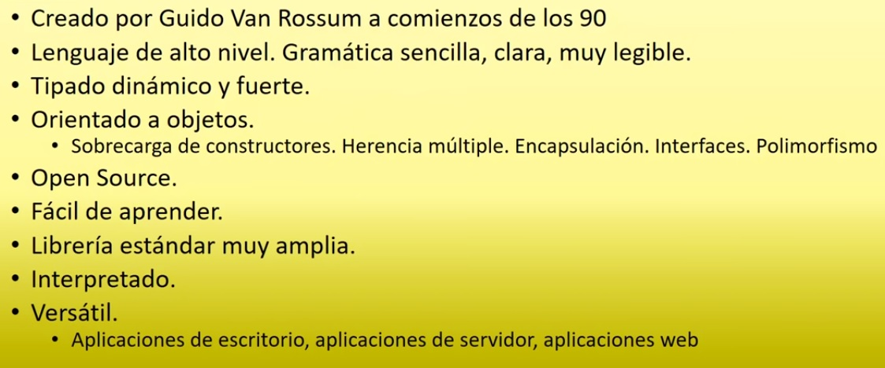

¿Qué es Python?
Python es uno de los más populares lenguajes de programación en el mundo debido a su simplicidad y facilidad de uso. Su sintaxis es muy similar a la del idioma inglés. Es una herramienta open source y free for use con una vasta comunidad que contribuye con miles de librerías que facilitan el trabajo de desarrolladores y data scientists. Las librerías reemplazan grandes cantidades de código con una pocas líneas de código.
Pregunta: ¿Qué es Python?
RespuestaCaracterísticas
Python es un lenguaje de programación simple, de propósito general, dinámico, de alto nivel, interactivo, interpretado, y orientado a objetos. Guido van Rossum desarrolló Python en el National Research Institute de Países Bajos en los 1980s. Su primera versión fue presentada oficialmente en 1991. Es usado por millones de websites, apps y juegos.
Una de las más simples (y más importantes!) tareas que se se le pueden pedir a una computadora es la de imprimir un mensaje. En Python, podemos imprimir un mensaje escribiendo print() y colocando el mensaje entre comillas dentro de los paréntesis.
Para mostrar Hello, world! escribimos: